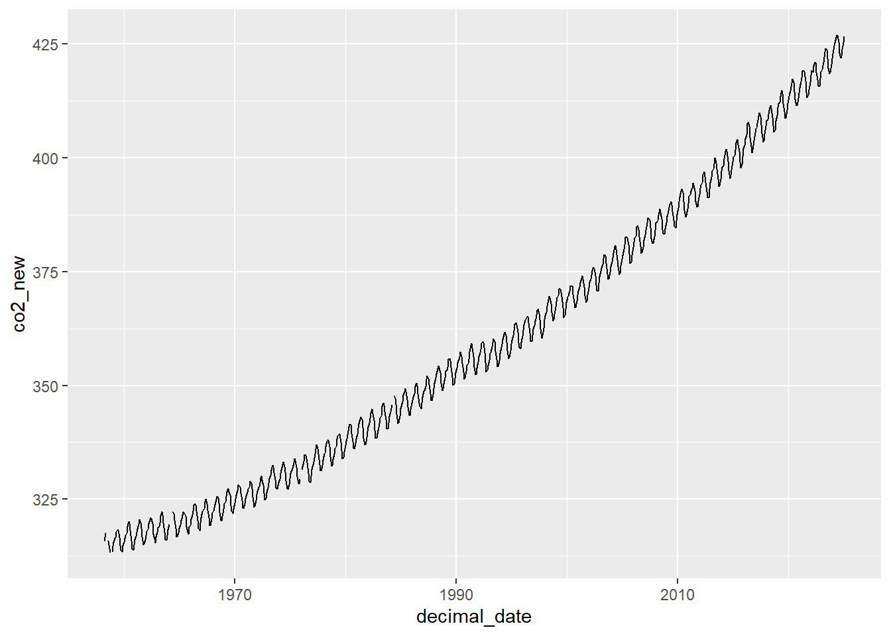
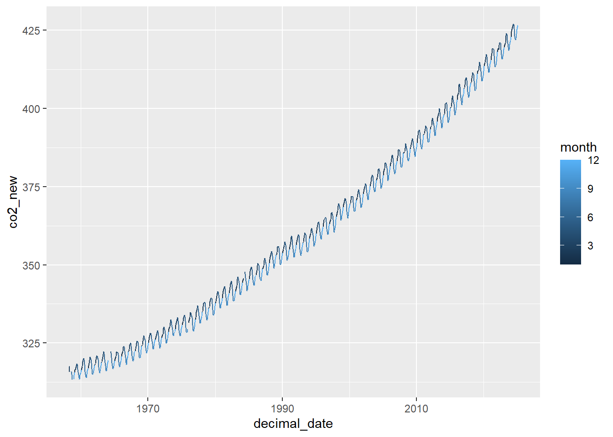
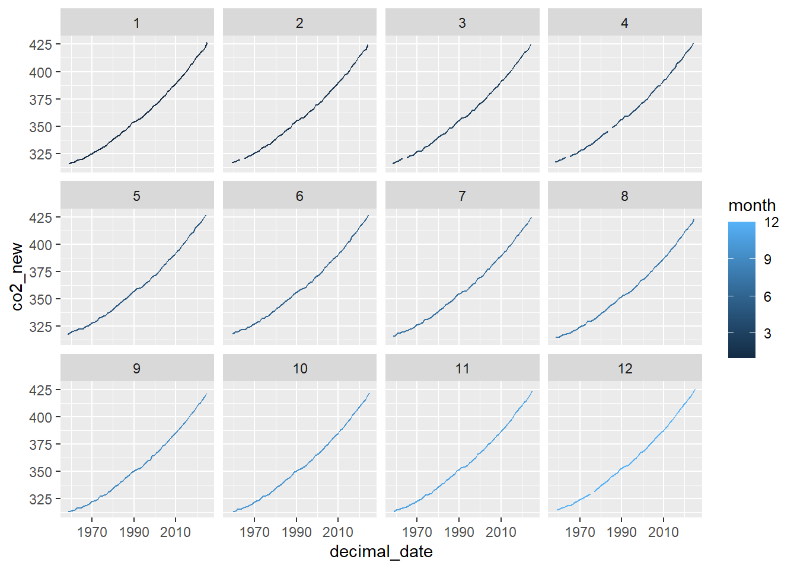
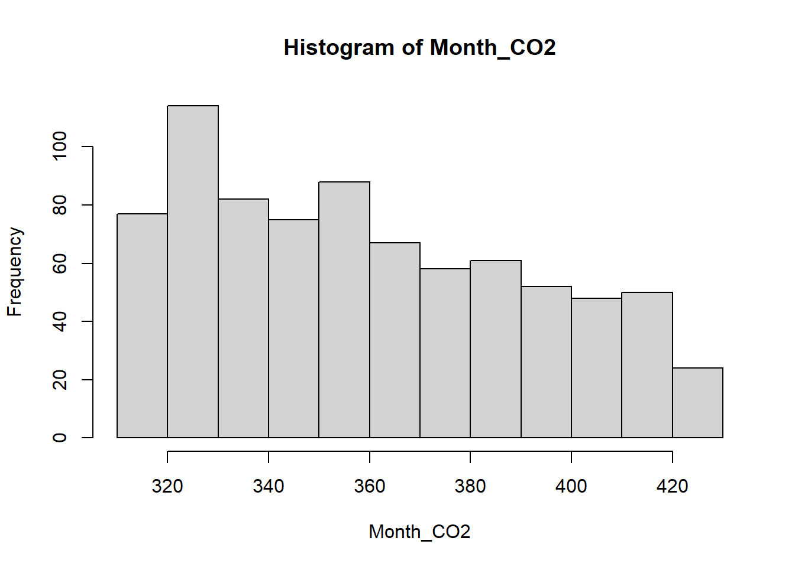
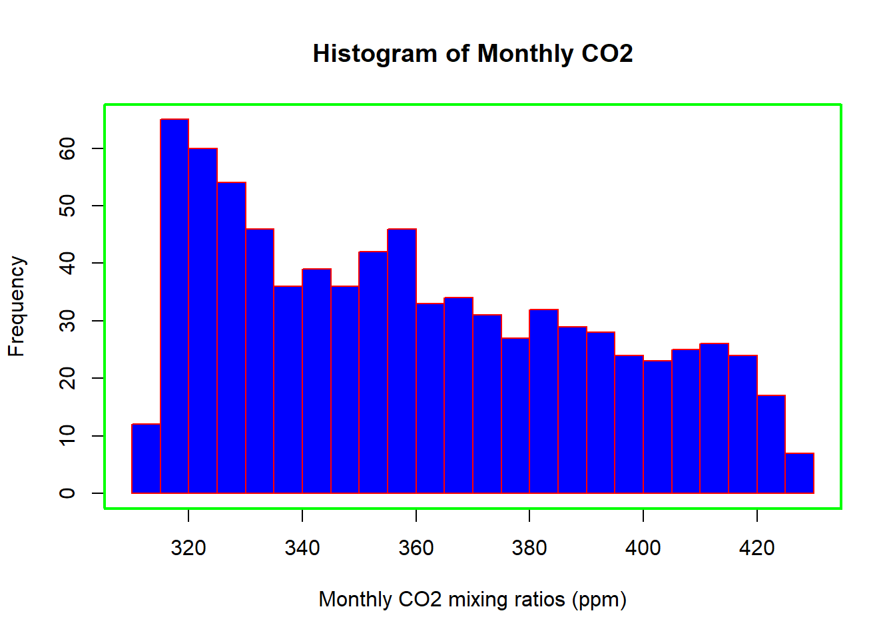
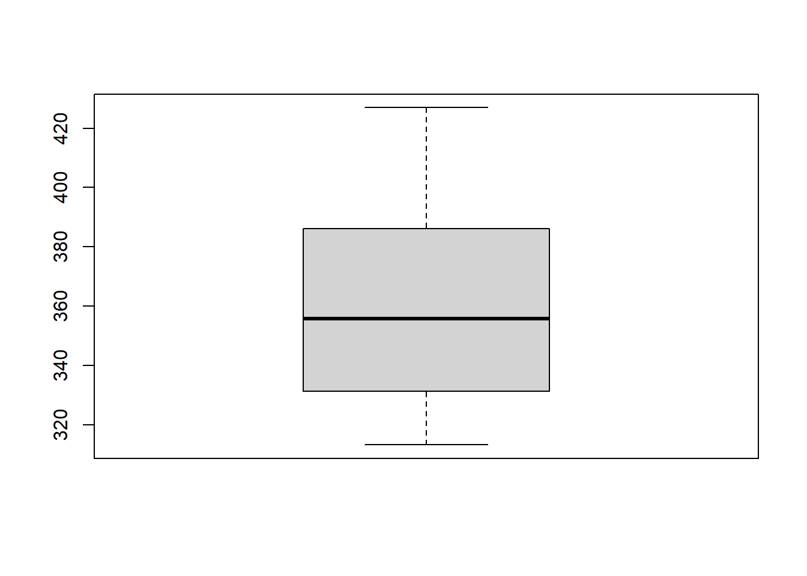
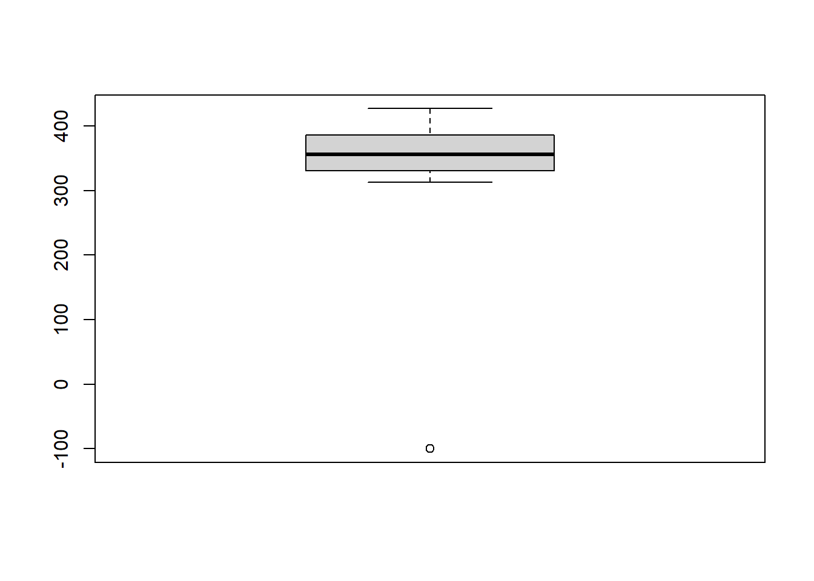
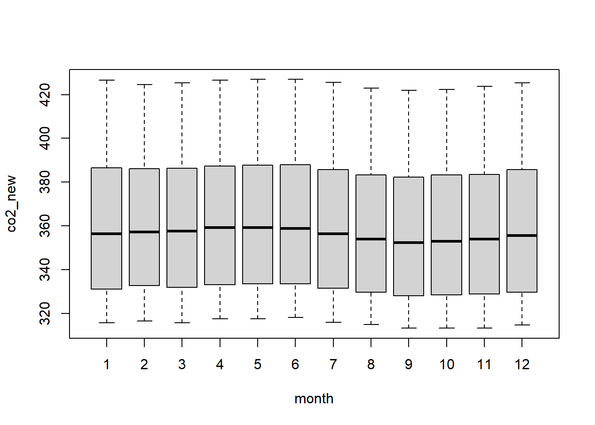
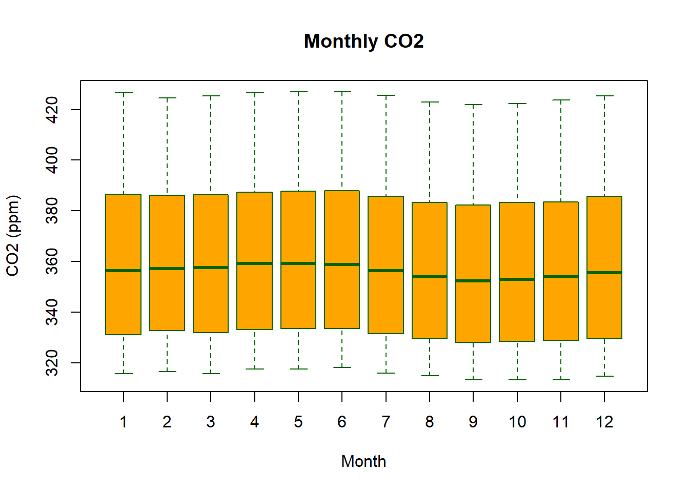
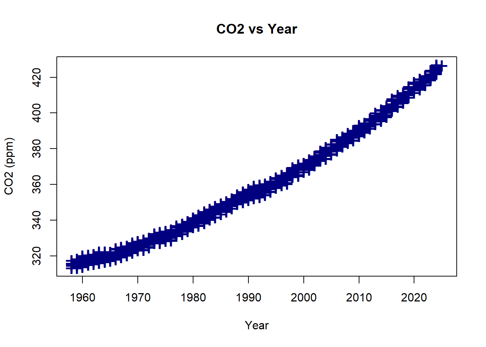

Section 02 Data wrangling and quick plots
Prerequisites
Install the following packages:
tidyrdplyrggplot2
Load the libraries with R:
Section Example: weather data from BaoAn airport
Environment data, expecially raw observations, are really messy. Here we take a look at hourly weather data measured at BaoAn International Airport during the past 10 years. The data set is from NOAA Integrated Surface Dataset.
Download the file 2281305.zip, where the number 2281305 is the site ID.
Extract the zip file, you should see a file named 2281305.csv.
Open the file, you see many columns and even more lines, with no clear meaning and definitions. This is very often you would encounter when work with environmental data. As Hadley Wickham puts it, “Tidy datasets are all alike, but every messy dataset is messy in its own way.”
The notes below are modified from the excellent Dataframe Manipulation and freely available on the Software Carpentry website.
Loading a .csv file

Charles David Keeling directed a program to measure the concentrations of CO2 in the atmosphere that continued without interruption from the late 1950s through the present. This program, operated out of Scripps Institution of Oceanography, is responsible for the Mauna Loa record, which is almost certainly the best-known icon illustrating the impact of humanity on the planet as a whole. Learn more about Keeling Curve Lessons.
We will start with monthly CO2 data measured from Mauna Loa.
To begin with,
Download the
co2_mm_mlo.csvfile from hereSave the file to your
working directory.Take a look at the file, where the column
co2means monthly average CO2 in the unit ofppm(part per million, 10-6),qualitycolumn is the quality flag of the observation,0means the data point does not meet the quality control so that should be discarded,1means the data point is usable.
Now let’s load this file via the following:
The file is loaded into the dataset Keeling_Data. Here we use the option header = T so that the first line of co2_mm_mlo.csv is also loaded as names of the variables. You can try to turn this off by setting header = F, and check what happens.
Check the names of columns:
## [1] "year" "month" "decimal_date" "co2" "quality"If column names are not specified, e.g., using headers = FALSE in a read.csv() function, R assigns default names V1, V2, …, Vn.
Check the head (first 6 lines) of the dataset using head() function
## year month decimal_date co2 quality
## 1 1958 March 1958.203 315.70 1
## 2 1958 April 1958.288 317.45 1
## 3 1958 May 1958.370 317.51 1
## 4 1958 June 1958.455 -99.99 0
## 5 1958 July 1958.537 315.86 1
## 6 1958 August 1958.622 314.93 1Or the end of (last 6 lines) with tail():
## year month decimal_date co2 quality
## 762 2021 August 2021.625 414.47 1
## 763 2021 September 2021.708 413.30 1
## 764 2021 October 2021.792 413.93 1
## 765 2021 November 2021.875 415.01 1
## 766 2021 December 2021.958 416.71 1
## 767 2022 January 2022.042 418.19 1The read.table() function is used for reading in tabular data stored in a text file where the columns of data are separated by punctuation characters such as .csv files (csv = comma-separated values). Tabular files are the most common file type you would encounter in your future study, as it’s easy to use and share.
Tabs and commas are the most common punctuation characters used to separate or delimit data points in .csv files. For convenience R provides 2 other versions of read.table(). These are: read.csv() for files where the data are separated with commas and read.delim() for files where the data are separated with tabs. Of these three functions, read.csv() is the most commonly used. If needed it is possible to override the default delimiting punctuation marks for both read.csv() and read.delim().
We can begin exploring our data set right away, pulling out columns by specifying them using the $ operator:
## [1] 315.70 317.45 317.51 -99.99 315.86 314.93 313.20 -99.99 313.33 314.67 315.58 316.48 316.65 317.72 318.29 318.15 316.54 314.80 313.84 313.33 314.81 315.58 316.43 316.98 317.58 319.03
## [27] 320.04 319.59 318.18 315.90 314.17 313.83 315.00 316.19 316.89 317.70 318.54 319.48 320.58 319.77 318.57 316.79 314.99 315.31 316.10 317.01 317.94 318.55 319.68 320.57 321.02 320.62
## [53] 319.61 317.40 316.25 315.42 316.69 317.70 318.74 319.07 319.86 321.38 322.25 321.48 319.74 317.77 316.21 315.99 317.07 318.35 319.57 -99.99 -99.99 -99.99 322.26 321.89 320.44 318.69
## [79] 316.70 316.87 317.68 318.71 319.44 320.44 320.89 322.14 322.17 321.87 321.21 318.87 317.81 317.30 318.87 319.42 320.62 321.60 322.39 323.70 324.08 323.75 322.38 320.36 318.64 318.10
## [105] 319.78 321.03 322.33 322.50 323.04 324.42 325.00 324.09 322.54 320.92 319.25 319.39 320.73 321.96 322.57 323.15 323.89 325.02 325.57 325.36 324.14 322.11 320.33 320.25 321.32 322.89
## [131] 324.00 324.42 325.63 326.66 327.38 326.71 325.88 323.66 322.38 321.78 322.86 324.12 325.06 325.98 326.93 328.13 328.08 327.67 326.34 324.69 323.10 323.06 324.01 325.13 326.17 326.68
## [157] 327.17 327.79 328.93 328.57 327.36 325.43 323.36 323.56 324.80 326.01 326.77 327.63 327.75 329.72 330.07 329.09 328.04 326.32 324.84 325.20 326.50 327.55 328.55 329.56 330.30 331.50
## [183] 332.48 332.07 330.87 329.31 327.51 327.18 328.16 328.64 329.35 330.71 331.48 332.65 333.19 332.20 331.07 329.15 327.33 327.28 328.31 329.58 330.73 331.46 331.94 333.11 333.95 333.42
## [209] 331.97 329.95 328.50 328.36 329.38 -99.99 331.56 332.74 333.36 334.74 334.72 333.98 333.08 330.68 328.96 328.72 330.16 331.62 332.68 333.17 334.96 336.14 336.93 336.17 334.88 332.56
## [235] 331.29 331.28 332.46 333.60 334.94 335.26 336.66 337.69 338.02 338.01 336.50 334.42 332.36 332.45 333.76 334.91 336.14 336.69 338.27 338.82 339.24 339.26 337.54 335.72 333.97 334.24
## [261] 335.32 336.82 337.90 338.34 340.07 340.93 341.45 341.36 339.45 337.67 336.25 336.14 337.30 338.29 339.29 340.55 341.63 342.60 343.04 342.54 340.82 338.48 336.95 337.05 338.57 339.91
## [287] 340.93 341.76 342.78 343.96 344.77 343.88 342.42 340.24 338.38 338.41 339.44 340.78 341.57 342.79 343.37 345.40 346.14 345.76 344.32 342.50 340.46 340.53 341.79 343.20 344.21 344.92
## [313] 345.68 -99.99 347.77 347.16 345.79 343.74 341.59 341.86 343.31 345.00 345.48 346.41 347.91 348.66 349.28 348.65 346.90 345.26 343.47 343.35 344.73 346.12 346.78 347.48 348.25 349.86
## [339] 350.52 349.98 348.25 346.17 345.48 344.82 346.22 347.49 348.73 348.92 349.81 351.40 352.15 351.59 350.21 348.20 346.66 346.72 348.08 349.28 350.51 351.70 352.50 353.67 354.35 353.88
## [365] 352.80 350.49 348.97 349.37 350.43 351.62 353.07 353.43 354.08 355.72 355.95 355.44 354.05 351.84 350.09 350.33 351.55 352.91 353.86 355.10 355.75 356.38 357.38 356.39 354.89 353.07
## [391] 351.38 351.69 353.14 354.41 354.93 355.82 357.33 358.77 359.23 358.23 356.30 353.97 352.34 352.43 353.89 355.21 356.34 357.21 357.97 359.22 359.71 359.43 357.15 354.98 353.01 353.41
## [417] 354.42 355.68 357.10 357.42 358.59 359.39 360.30 359.64 357.46 355.76 354.14 354.23 355.53 357.03 358.36 359.04 360.11 361.36 361.78 360.94 359.51 357.59 355.86 356.21 357.65 359.10
## [443] 360.04 361.00 361.98 363.44 363.83 363.33 361.78 359.33 358.32 358.14 359.61 360.82 362.20 363.36 364.28 364.69 365.25 365.06 363.69 361.55 359.69 359.72 361.04 362.39 363.24 364.21
## [469] 364.65 366.49 366.77 365.73 364.46 362.40 360.44 360.98 362.65 364.51 365.39 366.10 367.36 368.79 369.56 369.13 367.98 366.10 364.16 364.54 365.67 367.30 368.35 369.28 369.84 371.15
## [495] 371.12 370.46 369.61 367.06 364.95 365.52 366.88 368.26 369.45 369.71 370.75 371.98 371.74 371.87 370.02 368.27 367.15 367.18 368.53 369.83 370.76 371.69 372.63 373.55 374.03 373.40
## [521] 371.68 369.78 368.34 368.61 369.94 371.42 372.70 373.37 374.30 375.19 375.93 375.69 374.16 372.03 370.92 370.73 372.43 373.98 375.07 375.82 376.64 377.92 378.78 378.46 376.88 374.57
## [547] 373.34 373.31 374.84 376.17 377.17 378.05 379.06 380.54 380.80 379.87 377.65 376.17 374.43 374.63 376.33 377.68 378.63 379.91 380.95 382.48 382.64 382.40 380.93 378.93 376.89 377.19
## [573] 378.54 380.31 381.58 382.40 382.86 384.80 385.22 384.24 382.65 380.60 379.04 379.33 380.35 382.02 383.10 384.12 384.81 386.73 386.78 386.33 384.73 382.24 381.20 381.37 382.70 384.19
## [599] 385.78 386.06 386.28 387.33 388.78 387.99 386.61 384.32 383.41 383.21 384.41 385.79 387.17 387.70 389.04 389.76 390.36 389.70 388.25 386.29 384.95 384.64 386.23 387.63 388.91 390.41
## [625] 391.37 392.67 393.21 392.38 390.41 388.54 387.03 387.43 388.87 389.99 391.50 392.05 392.80 393.44 394.41 393.95 392.72 390.33 389.28 389.19 390.48 392.06 393.31 394.04 394.59 396.38
## [651] 396.93 395.91 394.56 392.59 391.32 391.27 393.20 394.57 395.78 397.03 397.66 398.64 400.02 398.81 397.51 395.39 393.72 393.90 395.36 397.03 398.04 398.27 399.91 401.51 401.96 401.43
## [677] 399.38 397.32 395.64 396.29 397.55 399.15 400.18 400.55 401.74 403.35 404.15 402.97 401.46 399.11 397.82 398.49 400.27 402.06 402.73 404.25 405.06 407.60 407.90 406.99 404.59 402.45
## [703] 401.23 401.79 403.72 404.64 406.36 406.66 407.53 409.22 409.89 409.08 407.33 405.32 403.57 403.82 405.31 407.00 408.15 408.52 409.59 410.45 411.44 410.99 408.90 407.16 405.71 406.19
## [729] 408.21 409.27 411.03 411.96 412.18 413.54 414.86 414.16 411.97 410.18 408.76 408.75 410.48 411.98 413.61 414.34 414.74 416.45 417.31 416.60 414.62 412.78 411.52 411.51 413.12 414.26
## [755] 415.52 416.75 417.64 419.05 419.13 418.94 416.96 414.47 413.30 413.93 415.01 416.71 418.19Let’s do some simple statistical checks with Keeling_Data$co2:
## [1] -99.99## [1] 419.13## [1] -99.99 419.13## [1] 352.9977## [1] 353.86## Min. 1st Qu. Median Mean 3rd Qu. Max.
## -99.99 329.33 353.86 353.00 381.07 419.13You will find there are some -99.99 values, which are missing values. We will get back to this later.
You can use [] to extract elements of a vector by specifying their corresponding index.
Important: Index in R starts from 1, not 0. For example:
## [1] 315.70 317.45 317.51 -99.99 315.86 314.93 313.20 -99.99 313.33 314.67## [1] 1974 1974 1974 1975 1975 1975 1975 1975 1975 1975 1975## numeric(0)Tidy data
In the rest of the section, we will learn a consistent way to organize the data in R, called tidy data. Getting the data into this format requires some upfront work, but that work pays off in the long term. Once you have tidy data and the tools provided by the tidyr, dplyr and ggplot2 packages, you will spend much less time munging/wrangling data from one representation to another, allowing you to spend more time on the analytic questions at hand.
Tibble
For now, we will use tibble instead of R’s traditional data.frame. Tibble is a data frame, but they tweak some older behaviors to make life a little easier.
Let’s use Keeling_Data again:
## year month decimal_date co2 quality
## 1 1958 March 1958.203 315.70 1
## 2 1958 April 1958.288 317.45 1
## 3 1958 May 1958.370 317.51 1
## 4 1958 June 1958.455 -99.99 0
## 5 1958 July 1958.537 315.86 1
## 6 1958 August 1958.622 314.93 1You can coerce a data.frame to a tibble using the as_tibble() function:
## # A tibble: 767 x 5
## year month decimal_date co2 quality
## <int> <chr> <dbl> <dbl> <int>
## 1 1958 March 1958. 316. 1
## 2 1958 April 1958. 317. 1
## 3 1958 May 1958. 318. 1
## 4 1958 June 1958. -100. 0
## 5 1958 July 1959. 316. 1
## 6 1958 August 1959. 315. 1
## 7 1958 September 1959. 313. 1
## 8 1958 October 1959. -100. 0
## 9 1958 November 1959. 313. 1
## 10 1958 December 1959. 315. 1
## # ... with 757 more rowsTidy dataset
There are three inter-related rules which make a dataset tidy:
- Each variable must have its own column;
- Each observation must have its own row;
- Each value must have its own cell;
These three rules are interrelated because it’s impossible to only satisfy two of the three.
That interrelationship leads to an even simpler set of practical instructions:
- Put each dataset in a tibble
- Put each variable in a column
Why ensure that your data is tidy? There are two main advantages:
There’s a general advantage to picking one consistent way of storing data. If you have a consistent data structure, it’s easier to learn the tools that work with it because they have an underlying uniformity. If you ensure that your data is tidy, you’ll spend less time fighting with the tools and more time working on your analysis.
There’s a specific advantage to placing variables in columns because it allows R’s vectorized nature to shine. That makes transforming tidy data feel particularly natural.
tidyr,dplyr, andggplot2are designed to work with tidy data.
The dplyr package
The dplyr package provides a number of very useful functions for manipulating dataframes in a way that will reduce the self-repetition, reduce the probability of making errors, and probably even save you some typing. As an added bonus, you might even find the dplyr grammar easier to read.
Here we’re going to cover commonly used functions as well as using pipes %>% to combine them.
Using select()
Use the select() function to keep only the variables (columns) you select.
## # A tibble: 767 x 3
## year co2 quality
## <int> <dbl> <int>
## 1 1958 316. 1
## 2 1958 317. 1
## 3 1958 318. 1
## 4 1958 -100. 0
## 5 1958 316. 1
## 6 1958 315. 1
## 7 1958 313. 1
## 8 1958 -100. 0
## 9 1958 313. 1
## 10 1958 315. 1
## # ... with 757 more rows## # A tibble: 767 x 1
## co2
## <dbl>
## 1 316.
## 2 317.
## 3 318.
## 4 -100.
## 5 316.
## 6 315.
## 7 313.
## 8 -100.
## 9 313.
## 10 315.
## # ... with 757 more rowsThe pipe symbol %>%
Above we used ‘normal’ grammar, but the strengths of dplyr and tidyr lie in combining several functions using pipes. Since the pipes grammar is unlike anything we’ve seen in R before, let’s repeat what we’ve done above using pipes.
x %>% f(y) is the same as f(x, y)
## # A tibble: 767 x 3
## year co2 quality
## <int> <dbl> <int>
## 1 1958 316. 1
## 2 1958 317. 1
## 3 1958 318. 1
## 4 1958 -100. 0
## 5 1958 316. 1
## 6 1958 315. 1
## 7 1958 313. 1
## 8 1958 -100. 0
## 9 1958 313. 1
## 10 1958 315. 1
## # ... with 757 more rowsThe above lines mean we first call the Keeling_Data_tbl tibble and pass it on, using the pipe symbol %>%, to the next step, which is the select() function. In this case, we don’t specify which data object we use in the select() function since in gets that from the previous pipe. The select() function then takes what it gets from the pipe, in this case the Keeling_Data_tbl tibble, as its first argument. By using pipe, we can take output of the previous step as input for the next one, so that we can avoid defining and calling unnecessary temporary variables. You will start to see the power of pipe later.
Using filter()
Use filter() to get values (rows):
## # A tibble: 12 x 5
## year month decimal_date co2 quality
## <int> <chr> <dbl> <dbl> <int>
## 1 2000 January 2000. 369. 1
## 2 2000 February 2000. 370. 1
## 3 2000 March 2000. 371. 1
## 4 2000 April 2000. 372. 1
## 5 2000 May 2000. 372. 1
## 6 2000 June 2000. 372. 1
## 7 2000 July 2001. 370. 1
## 8 2000 August 2001. 368. 1
## 9 2000 September 2001. 367. 1
## 10 2000 October 2001. 367. 1
## 11 2000 November 2001. 369. 1
## 12 2000 December 2001. 370. 1If we now want to move forward with the above tibble, but only with quality == 1 , we can combine select() and filter() functions:
## # A tibble: 760 x 3
## year co2 quality
## <int> <dbl> <int>
## 1 1958 316. 1
## 2 1958 317. 1
## 3 1958 318. 1
## 4 1958 316. 1
## 5 1958 315. 1
## 6 1958 313. 1
## 7 1958 313. 1
## 8 1958 315. 1
## 9 1959 316. 1
## 10 1959 316. 1
## # ... with 750 more rowsYou see here we have used the pipe twice, and the scripts become really clean and easy to follow.
Using group_by() and summarize()
Now try to group monthly data using the group_by() function, notice how the output tibble changes:
Keeling_Data_tbl %>%
dplyr::select(year,month,co2,quality) %>%
filter(quality == 1) %>%
group_by(month)## # A tibble: 760 x 4
## # Groups: month [12]
## year month co2 quality
## <int> <chr> <dbl> <int>
## 1 1958 March 316. 1
## 2 1958 April 317. 1
## 3 1958 May 318. 1
## 4 1958 July 316. 1
## 5 1958 August 315. 1
## 6 1958 September 313. 1
## 7 1958 November 313. 1
## 8 1958 December 315. 1
## 9 1959 January 316. 1
## 10 1959 February 316. 1
## # ... with 750 more rowsThe group_by() function is much more exciting in conjunction with the summarize() function. This will allow us to create new variable(s) by using functions that repeat for each of the continent-specific data frames. That is to say, using the group_by() function, we split our original dataframe into multiple pieces, then we can run functions (e.g., mean() or sd()) within summarize().
Keeling_Data_tbl %>%
dplyr::select(year,month,co2,quality) %>%
filter(quality == 1) %>%
group_by(month) %>%
summarize(monthly_mean = mean(co2))## # A tibble: 12 x 2
## month monthly_mean
## <chr> <dbl>
## 1 April 360.
## 2 August 355.
## 3 December 357.
## 4 February 358.
## 5 January 358.
## 6 July 357.
## 7 June 360.
## 8 March 358.
## 9 May 360.
## 10 November 355.
## 11 October 355.
## 12 September 354.Here we create a new variable (column) monthly_mean, and append it to the groups (month in this case). Now, we get a so-called monthly climatology.
You can also use arrange() and desc() to sort the data:
Keeling_Data_tbl %>%
dplyr::select(year,month,co2,quality) %>%
filter(quality == 1) %>%
group_by(month) %>%
summarize(monthly_mean = mean(co2)) %>%
arrange(monthly_mean)## # A tibble: 12 x 2
## month monthly_mean
## <chr> <dbl>
## 1 September 354.
## 2 October 355.
## 3 November 355.
## 4 August 355.
## 5 December 357.
## 6 July 357.
## 7 January 358.
## 8 February 358.
## 9 March 358.
## 10 May 360.
## 11 June 360.
## 12 April 360.Keeling_Data_tbl %>%
dplyr::select(year,month,co2,quality) %>%
filter(quality == 1) %>%
group_by(month) %>%
summarize(monthly_mean = mean(co2)) %>%
arrange(desc(monthly_mean))## # A tibble: 12 x 2
## month monthly_mean
## <chr> <dbl>
## 1 April 360.
## 2 June 360.
## 3 May 360.
## 4 March 358.
## 5 February 358.
## 6 January 358.
## 7 July 357.
## 8 December 357.
## 9 August 355.
## 10 November 355.
## 11 October 355.
## 12 September 354.Let’s add more statistics to the monthly climatology:
Keeling_Data_tbl %>%
dplyr::select(year,month,co2,quality) %>%
filter(quality == 1) %>%
group_by(month) %>%
summarize(monthly_mean = mean(co2), monthly_sd = sd(co2),
monthly_min = min(co2), monthly_max = max(co2),
monthly_se = sd(co2)/sqrt(n()))## # A tibble: 12 x 6
## month monthly_mean monthly_sd monthly_min monthly_max monthly_se
## <chr> <dbl> <dbl> <dbl> <dbl> <dbl>
## 1 April 360. 30.2 317. 419. 3.84
## 2 August 355. 29.8 315. 414. 3.73
## 3 December 357. 30.4 315. 417. 3.84
## 4 February 358. 29.7 316. 417. 3.77
## 5 January 358. 30.5 316. 418. 3.81
## 6 July 357. 29.9 316. 417. 3.74
## 7 June 360. 29.9 318. 419. 3.76
## 8 March 358. 29.9 316. 418. 3.77
## 9 May 360. 30.2 318. 419. 3.77
## 10 November 355. 30.3 313. 415. 3.78
## 11 October 355. 29.9 313. 414. 3.77
## 12 September 354. 29.9 313. 413. 3.74Here we call the n() to get the size of a vector.
Using mutate()
We can also create new variables (columns) using the mutate() function. Here we create a new column co2_ppb by simply scaling co2 by a factor of 1000.
## # A tibble: 767 x 6
## year month decimal_date co2 quality co2_ppb
## <int> <chr> <dbl> <dbl> <int> <dbl>
## 1 1958 March 1958. 316. 1 315700
## 2 1958 April 1958. 317. 1 317450
## 3 1958 May 1958. 318. 1 317510
## 4 1958 June 1958. -100. 0 -99990
## 5 1958 July 1959. 316. 1 315860
## 6 1958 August 1959. 315. 1 314930
## 7 1958 September 1959. 313. 1 313200
## 8 1958 October 1959. -100. 0 -99990
## 9 1958 November 1959. 313. 1 313330
## 10 1958 December 1959. 315. 1 314670
## # ... with 757 more rowsWhen creating new variables, we can hook this with a logical condition. A simple combination of mutate() and ifelse() facilitates filtering right where it is needed: in the moment of creating something new. This easy-to-read statement is a fast and powerful way of discarding certain data or for updating values depending on this given condition.
Let’s create a new variable co2_new, it is equal to co2 when quality==1, otherwise it’s NA:
## # A tibble: 767 x 7
## year month decimal_date co2 quality co2_ppb co2_new
## <int> <chr> <dbl> <dbl> <int> <dbl> <dbl>
## 1 1958 March 1958. 316. 1 315700 316.
## 2 1958 April 1958. 317. 1 317450 317.
## 3 1958 May 1958. 318. 1 317510 318.
## 4 1958 June 1958. -100. 0 -99990 NA
## 5 1958 July 1959. 316. 1 315860 316.
## 6 1958 August 1959. 315. 1 314930 315.
## 7 1958 September 1959. 313. 1 313200 313.
## 8 1958 October 1959. -100. 0 -99990 NA
## 9 1958 November 1959. 313. 1 313330 313.
## 10 1958 December 1959. 315. 1 314670 315.
## # ... with 757 more rowsCombining dplyr and ggplot2
Just as we used %>% to pipe data along a chain of dplyr functions we can use it to pass data to ggplot(). Because %>% replaces the first argument in a function we don’t need to specify the data = argument in the ggplot() function.
By combining dplyr and ggplot2 functions, we can make figures without creating any new variables or modifying the data.
Keeling_Data_tbl %>%
mutate(co2_new = ifelse(quality==1, co2, NA)) %>%
# Make the plot
ggplot(aes(x=decimal_date, y=co2_new)) +
geom_line()
Let’s plot CO2 of the same month as a function of decimal_date, with the color option:
Keeling_Data_tbl %>%
mutate(co2_new = ifelse(quality==1, co2, NA)) %>%
# Make the plot
ggplot(aes(x=decimal_date, y=co2_new, color=month)) +
geom_line()## Warning: Removed 2 row(s) containing missing values (geom_path).
Or plot the same data but in panels (facets), with the facet_wrap function:
Keeling_Data_tbl %>%
mutate(co2_new = ifelse(quality==1, co2, NA)) %>%
# Make the plot
ggplot(aes(x=decimal_date, y=co2_new, color=month)) +
geom_line() +
facet_wrap(~ month)## Warning: Removed 2 row(s) containing missing values (geom_path).
OK, that is enough for data wrangling We will learn more about ggplot2 in future sections.
Quick plots
Now think about what will you do when get a new dataset before analyzing it?
Normally, we would like to do two things - to take a quick look at the statics and to plot the patterns.
R has many built-in functions for a large number of summary statistics. For example, mean(), median(), range(), max(), min(), sd(), var(), IQR(), and summary(). Make sure you understand how to use them and always pay attentions to NA values.
Our next task is to visualize the data. Often, a proper visualization can illuminate features of the data that can inform further analysis. We will learn three basic types of plots in this section.
Histograms
When visualizing a single numerical variable, a histogram will be our go-to tool, which can be created in R using the hist() function.
# Add a new column to the original tibble
Keeling_Data_tbl <- Keeling_Data_tbl %>%
mutate(co2_new = ifelse(quality==1, co2, NA))
# Notice we use pull() to get a vector from a tibble
Month_CO2 <- Keeling_Data_tbl %>%
pull(co2_new)
# plot hist
hist(Month_CO2)
The histogram function has a number of parameters which can be changed to make our plot look much nicer. Use the ? operator to read the documentation for the hist() to see a full list of these parameters.
hist(Month_CO2,
xlab = "Monthly CO2 mixing ratios (ppm)",
main = "Histogram of Monthly CO2",
breaks = 20,
col = "blue",
border = "red")
box(lwd=2,col="green")
By default R will attempt to intelligently guess a good number of breaks, but as we can see here, it is sometimes useful to modify this yourself.
Boxplots
To visualize the relationship between a numerical and categorical variable, we will use a boxplot. A boxplot is usful in checking the center, spread, and skewness of a sample.
In the Keeling_Data_tbl dataset, the month is a categorical variable. First, note that we can use a single boxplot as an alternative to a histogram for visualizing a single numerical variable. To do so in R, we use the boxplot() function.

Or try to plot the raw data:

However, more often, we will use boxplots to compare a numerical variable for different values of a categorical variable.

Here we used the boxplot() command to create side-by-side boxplots. However, since we are now dealing with two variables, the syntax has changed. The R syntax co2_new ~ month, data = Keeling_Data_tbl reads “Plot the co2_new variable against the month variable using the Keeling_Data_tbl dataset.” We see the use of a ~ (which specifies a formula) and also a data = argument. This will be a syntax that is common to many functions we will use later.
Again, boxplot() has a number of additional arguments which have the ability to make our plot more visually appealing.
boxplot(co2_new ~ month, data=Keeling_Data_tbl,
xlab = "Month",
ylab = "CO2 (ppm)",
main = "Monthly CO2",
cex = 2,
col = "orange",
border = "darkgreen")
Scatterplots
Lastly, to visualize the relationship between two numeric variables, we will use a scatterplot. This can be done with the plot() function and the ~ syntax we just used with a boxplot. (The function plot() can also be used more generally; see the documentation for details.)
plot(co2_new ~ year, data=Keeling_Data_tbl,
xlab = "Year",
ylab = "CO2 (ppm)",
main = "CO2 vs Year",
pch = "+",
cex = 2,
col = "navy")
In-class exercises
Exercise #1
Use Keeling_Data, compute the annual mean of CO2 since 1959, plot your results.
Further reading
- Data Wrangling with dplyr and tidyr Cheat Sheet
- Dataframe Manipulation with dplyr
- Dataframe Manipulation with tidyr
- R for Data Science, see chapter 10 and 12.
- Data wrangling with R, with a video